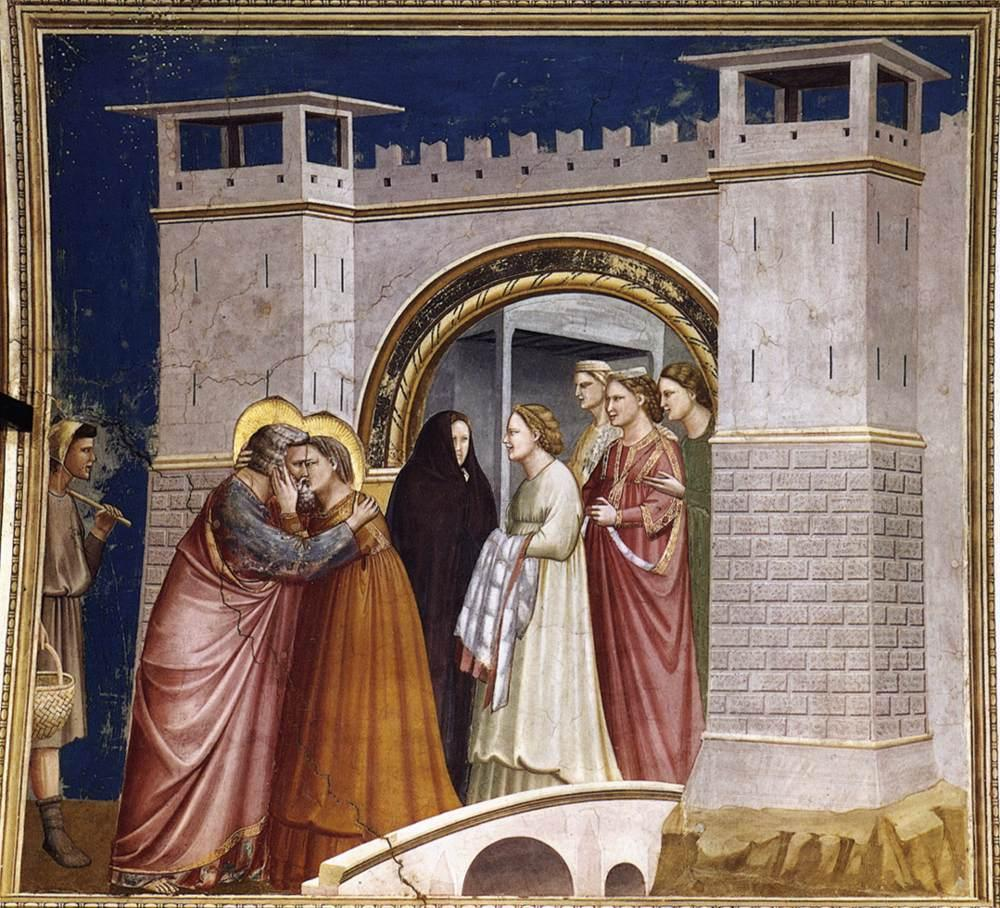

Course: Two Marys
Lecture #6: The Virgin Mary Introduction
NOTE: Text in Highlight is Optional
Four dogmas concerning Mary, the mother of Jesus have been defined and must be believed as articles of faith by Roman Catholics: 1. her divine motherhood and her virginity, both declared by councils of the early church and therefore accepted by most of the reformed Christian groups.
Second, the immaculate conception, sparing her all stain of original sin, which was proclaimed in 1854 by Pope Pius IX. and her assumption, body and soul, into heaven, which pope Pius XII defined in 1950.
The Vatican is still pondering whether Mary experienced death at all and whether the traditional and widespread faith in her perpetual virginity--her unbroken hymen after birth-- is necessary. Now, the Vatican is even pondering whether to make her a co-redemptrix with her son.
Mary already occupies the principle mediating position as the creature who belongs to both heaven and earth. In fact, the most evident function of Mary today is intercession. In a real sense, Mary is a manifestation of what the Chinese call YIN and represents the quintessence of many qualities that east and west have traditionally regarded as feminine: yieldingness, softness, gentleness, receptiveness, mercy, tolerance.
Whether we regard the Virgin Mary as the most sublime and beautiful image in humanities struggle towards the good and the pure, or the most pitiable production of ignorance and superstition, she represents a central theme in the history of western attitudes to women.
VIRGIN BIRTH IN THE ANCIENT WORLD
In the pre-Christian Roman Empire virgin birth was a shorthand symbol used to designate a person's divinity. The use of the virgin birth as the key to the argument that Jesus was the son of God was classical in spirit, and dependent on long lasting and erroneous ideas about conception that were inherited from classical philosophy.
The virgin birth was attacked frequently because it was common in pagan belief more than it was unlikely in nature. Its resemblance to the metamorphoses of the gods exposed a Xian nerve
Christians aware of the antique pantheon are still worried by the parallel between Christ's story and the dozens of virgin births of classical mythology.
The most sophisticated Christian counterattack by Origin is that God prepared the world for the greatest mystery of all with a sequence of beliefs and creeds and symbols that foreshadowed it and made its acceptance easier.
The historical fact remains that the virgin birth of heroes and sages was a widespread formula in the Hellenistic world: Pythagoras, Plato, Alexander were all believed to be born of woman by the power of a Holy Spirit. It became a commonplace claim of a spiritual leader.
There were many attempts by the church fathers to explain how Jesus arrived but the concept that divine paternity was the precondition of virgin birth and of Christ's divinity overcame all others in Christian orthodoxy. How was Jesus conceived? The idea of gods transforming themselves into animals (Zeus did this often) tied with the dove, representing the holy spirit coming upon Jesus at his baptism ended up with the Holy Spirit carrying the whole child into Mary's womb to be nourished there. The holy ghost, like a mother, conceived the child and then took possession of Mary until the day the child was born. (Origin)
The gender of the Holy spirit was now a problem. In Hebrew, Greek, etc. the holy spirit is feminine (even the dove imagery is feminine). Thus, in the west the shift from "she" to "He" in the case of the third person of the trinity took place by the 8th century and the spiritus Sanctus was incontrovertibly male.
The continuing need to explain miracles like the virgin birth arose because two traditions were combined in Christianity: The Jewish belief that all is possible with God, and the Greek view that some things are impossible in nature and that "God does not even attempt such things at all, but that he chooses the best out of the possibilities of becoming..."
The outcome of this contradiction was the typical Christian miracle: the resuscitation of the dead, the virgin birth, etc. which manifested the power and presence of God. thus, belief in the activity of the divine in human genesis lies at the heart of the Christian story of the incarnation.
This is at the heart of Catholic argument against contraception: Although sex undertaken w/o a view to conceive is sinful, the rhythm method is allowed, but any man-made method is forbidden as it places humans on the level of animals and God no longer appears to determine and intervene in the origin of every human life.
Christianity re-interpreted the meaning of virginity by insisting on the chastity was part of it. Originally, the pagan goddesses--Venus, Ishtar, Astarte, and Anat--the love goddesses of the near east are called 'virgin' despite their lovers, who die and rise again for them each year.
The oldest use of the word VIRGIN meant not the physiological condition of chastity, but the psychological state of belonging to no man, of belonging to oneself. To be virginal did not mean to be inviolate, but rather to be true to nature and instinct, just as the virgin forest is not barren or unfertilized, but instead in unexploited by man. Children born out of wedlock were at one time referred to as "virgin born."
In Christian times virginity only rarely preserved the notion of female independence. Rather, Xianity broadened the concept of virginity to embrace a fully developed ascetic philosophy. The interpretation of the virgin birth as the moral sanction of the goodness of sexual chastity was the overwhelming and distinctive contribution of Xianity to the ancient mythological formula.
It was this shift, from virgin birth to virginity, from religious sign to moral doctrine, that transformed a mother goddess like the Virgin Mary into an effective instrument of asceticism and female subjection. As Henry Adams put it: "The study of Our Lady...leads directly back to Eve, and lays bare the whole subject of sex."
MARY IN THE GOSPELS
The earliest reference to Mary (not by name) in the N. T. is found in Paul's letter to the Galatians written @ 57 CE. In Galatians 4:4 to drive home a point about Jesus’ humanity, he says Jesus was "made of a woman". That is the only reference to Jesus’ mother found anywhere in Paul.
In Mark, the oldest of the gospels in the cannon, she appears in a rather unflattering light (Mk 3:31) and is mentioned once as the mother of Jesus (Mark 6:3).
In John, the last composed, she makes two appearances: at the wedding feast at Cana with Jesus and at the foot of the Cross.
In the Acts of the Apostles, she is named as being present when the Holy Spirit is given at Pentecost, along with Jesus. brothers (Acts 1:14)
Knowledge about Mary is thus concentrated in two accounts of Christ's birth and infancy as found in Matthew and Luke. Most scholars agree that these were both later additions to the gospels and at best were written more than 80 years after the events they describe. Thus, the story of Jesus birth belongs to the realm of Myth. The two gospels don't agree on the events.
MATTHEW: opens with a long genealogy of Jesus coming down to Joseph who was a descendent of David. Abruptly, the gospel states that "Mary was found with child by the Holy Ghost."
He then shifts to Joseph who doubts her virtue. An angel comes in a dream and assures Joe that its ok and to call him Jesus for he will be the savior of his people. Joseph "knew her not" until Jesus was born. (Matt. 1:25). The three wise men come and worship him. An angel tells them to go home a different way.
Joseph again has an angelic visitor who tells him to take the child and mother to Egypt to escape Herod. When Herod dies, he takes them and settles in Nazareth. five times Matthew links an incident to prophecy from the Old Testament. When he couldn't find a prophecy, he invented one, as no messianic prophecy concerned Nazareth.
The Egyptian sequence--the flight, massacre of the innocents, miraculous deliverance, safe return --form a parallel with Moses escape from Pharaoh's massacre of first born, etc. Just as he parallels the New law given in the Sermon on the Mount with moses old law from Sinai.
Joseph parallels Joseph of the O.T. as a dreamer who no less than three times is visited by an angel in his sleep and granted prophetic vision.
LUKE is the scriptural source for all the great mysteries of the Virgin; the only time she is in the heart of the drama. In his gospel she speaks four times, in Matthew she is silent. Joseph is not a dreamer, the shepherds, not the wise men, come, Herod does not massacre the innocents, and the family doesn't go to Egypt.
It is Luke who tells the story of the annunciation, the visitation, the nativity and the presentation in the temple as well as the time when Jesus, at 12, was found talking to the learned doctors in the temple, the only occasion apart from the marriage feast at Cana when Jesus and his mother speak to each other.
An early Christian tradition held that Luke received his story from Mary herself. Many Catholic scholars still support that idea and believe that the story shows a contemplative personal mood as if it was conceived in a feminine mind.
But a closer look at Lukes narrative strip realism from its mythological core. Luke is intent on revealing to the reader the divinity of Christ and not write a biography as a contemporary historian might.
Luke intertwines the story of the birth of John the Baptist with that of Jesus. Hannah, the mother of Samuel in the Hebrew Bible, provides a particular model for both Elizabeth and Mary. Elizabeth bears a child in her old age and Mary in the Magnificat almost precisely copies Hannah's song when she had Samuel.
Samuel, prodigy child and wise adult, is Christ's prototype as mythic hero, and his mother Hannah is Mary's forbear, a relationship so close that by the second century Mary's mother was believed to be called Anna, another form of the name of Hannah, according to the legendary BOOK OF JAMES which we will deal with shortly.
The whole ball of wax about the manger, animals, etc. other than the swaddling clothes, are an invention of western fantasy. Even the word translated as Inn actually means a temporary shelter. Luke seems to be implying that at the moment of the incarnation the son of God had left the temporary accommodation the Jews offered him on their wanderings and come to rest in a crib where he would be recognized as Messiah.
It takes a Herculean effort to read Luke's "Christmas story" and blot out all the paintings, sculptures, carols, etc. that all to Luke's spare story. The amount of historical information about the Virgin is negligible. Her birth, death, appearance and her age are never mentioned.
The gospel of John never mentions Jesus Mother by name and does not repeat any of the incidents found in the synoptics.
The miracle at Cana records one of two conversations between Jesus and his mother (the other is in Luke).
Mother: They have no wine.
Jesus: Woman, what have I to do with thee? Mine hour is not yet come.
Mother: (to the servants): Whatsoever he says to you, do it.
-- John 2:3-5
In Mariological teaching, her intervention illustrates her pity, compassion, and thoughtfulness; but more importantly, its prompt effect--the inauguration of Christ's messianic mission by a spectacular miracle--radiantly reveals the efficiency of her intercession with Christ while the turning water into wine prefigures the passing of the old covenant before the New, with a miracle that symbolizes the mystery of the eucharistic wine. Thus, the association of Mary with the Church thru whom the sacrament of the Eucharist is granted deepens.
After this event, Mary disappears from view throughout Christs teaching life till the Crucifixion. Again, she is not named but the beloved disciple is given the charge of her. It says that "from that hour the disciple took her into his own home." (Jn 19:20-26)
This, in John, was Jesus last act and interpreters have been at pain to point out that "woman" was an honorific title and one that projects Mary beyond the restrictions of her temporal life onto the eternal plane, where she becomes universal motherhood itself. the "Beloved Disciple" thus stands for humanity, for all Christians adopted into the fold of the church.
The last time mentioned is in Acts 1:14 where she is with the apostles and "brethren" (Jesus’ brothers and sisters?). It remains ambiguous as to whether she received the Holy Ghost and spoke in tongues for Marks impression was that she resisted Christ's mission.
But the sum total of the Virgin's appearances in the N. T. is small plunder on which to build the great riches of Mariology. Of those four dogmas, mentioned at the beginning, her divine motherhood, her virginity, her immaculate conception, and her assumption into heaven-- only the first can be unequivocally traced to scripture.
Matthew is the only evangelist to make a clear statement about the virgin birth. However, the Isaiah passage Matthew uses (Isaiah 7) speak of a young girl of marriageable age--the word "almah" in Hebrew. It means one who is eligible, not necessarily a virgin at all. The Greek word used in the Septuagint, Parthenos, means virgin. Not the same word at all.
Matthew gave the prophecy a value it didn't possess. Isaiah promises King Ahaz that a child will be born and before he comes to the age of knowing right from wrong, his troubles would end.
Matthew seems to have no more concern about support for a virgin birth as his genealogy, as we said, goes thru Joseph. He sees no inconsistency in showing Jesus' Davidic descent in the paternal line, though he denies Joseph was his "biological father."
For Matthew, the virgin birth was a symbol that gave Jesus legitimacy as divine, and was not inconsistent with his legitimacy as a social being with an official, socially recognized father.
Both Matthew and Luke trace Jesus' descent from David thru Joseph, although Luke does add that Joseph was the father of Jesus "by repute". The Genealogies of the two evangelists are otherwise inconsistent.
The pressure to prove Jesus Davidic descent and consequent authenticity as the Messiah outweighed the urgency of arguments for the virgin birth at the time Matthew and Luke wrote and for the audience addressed.
The Fathers of the church expeditiously developed a solution to the problem of the patrilineal descent of Jesus. Mary, they declared, was Joseph's cousin, herself of the house of David.
Much more damaging to belief in the Virgin birth is the story in Luke of Jesus found in the temple at age 12. First, Luke refers to Joseph and Mary as Jesus Parents (Luke 2:41). Above all, during one of the exchanges between mother and son, Mary herself refers to Joseph as Jesus' father: "Behold thy father and I have sought thee sorrowing" (Luke 2:48) and when Jesus counters that he must be about his Father's business, neither she nor Joseph understand. Yet, how could they forget the events @ his birth?
The virginity of Mary after the birth of Christ is even more difficult to defend. Matthew says: "Before they came together, she was found with child." (Matt. 1:18) this could imply they did and Matt bears this out saying he "knew her not till she had brought forth her first born son.” (Matt. 1:24-25).
Luke's mind doesn't focus on the issue of Mary's virginity after Christ's birth any more than Matthews. Both evangelists express themselves in ways that have taken centuries of explanation on the part of the virgin Mary's devotees. Luke's reference to the law which says: "Every Male that opens the womb shall be called holy to the Lord" sends shivers thru devotees who take as a cherished belief that Mary was "virgo intacta post Partum"
The appearance of Jesus's brothers and sisters and mother in all three synoptics (Luke 19:21; Mark 3:31; Matt. 12:46) and the importance of James the Lord's brother in the church in Jerusalem also embarrasses the defense of Mary's lifelong virginity.
Origin, Gregory of Nyssa (d. 394) and other leading thinkers of the Greek church claimed that these "brethren" were Joseph's children by a first marriage. Thus Joseph, the dreamer metamorphosizes into a hoary-headed old widower leaning on a staff so familiar from Christian paintings.
Jerome in the western church (d. 420) couldn't handle that saying that Joseph also had to be and remain a virgin so the brethren were "Brethren in point of kinship" and "not by nature". Ie they were cousins or adopted. St. Jerome prevailed and the Latin church has honored Joseph as a virgin since his time.
THE GOLDEN LEGEND written in the late 13th century, and discussed already with Mary Magdalen, found devious loopholes to champion Mary's virginity. Its author, Jacobus de Varagine (d. 1298) declared that James was called the Lord's brother because he looked like him. So much so that Judas kiss of betrayal was to identify Jesus.
With greater ingenuity, the legend describes how St. Anne, the mother of the virgin Mary, was married twice before she married Joachim, Mary's father, and by each of her former husbands had a daughter called Mary. These other Mary’s, her sisters, in turn had children, who were Jesus "brethren".
The questions raised by the gospels regarding Mary have never caused most Catholics, or others, any lasting anxiety. Tradition has always affected how the gospels were read. From the earliest times, the N. T. itself was out of joint with the embattled desires and ideas of Christians for whom the virgin birth was a necessary precondition of Christ's divinity.
Even though the resurrection was the keystone of Christian salvation, by the fifth century its foundations were embedded in two complementary, momentous assumptions: The virgin birth as the essential sign of godhead and virginity itself as the essential sign of goodness.
MARY IN THE APOCRYPHA
On the walls of the Arena Chapel in Padua, Italy, Joachim and Anna, the parents of the virgin, embrace before the golden gate of Jerusalem. In Giotto's frescoes, this moment marks the conception of the Virgin Mary by Anna, and the event is an integral part of the grand schema of redemption that covers the chapel walls climaxing with the last judgement above the alter.

By 1305, when this chapel was dedicated, the miracles that attended the birth of Mary and set her apart as holy above all creatures ranked with the Resurrection as a Christian truth.
Giotto's source for this was the second century apocryphal BOOK OF JAMES, "the Lord's brother", and is an eastern tale that deeply influenced the cult of the virgin Mary in the west.
In the "Book of James" Joachim is portrayed as a man of exceptional wealth and charity. In spite of this, Anna is barren. They both fast and pray, she at home, Joachim in the desert and an angel comes to each promising them a child. They meet each other at the gate of Jerusalem and Mary is conceived.
Anna, like Hannah, dedicates the girl to the temple. Mary is born and her infancy is attended by prodigies. Walking at 6 months, etc. At three she is taken to the temple, and they all love her but when she reaches puberty, the high priest fears her pollution. He gathers the widowers of Israel, telling each man to carry a rod in his hand and God will give a sign of his choice for a husband for Mary.
Joseph goes with the other suiters and a dove flies from his rod to his head. In some accounts his staff, left overnight in the temple, bursts into flower (color palte I, fig. 1). The high priest orders Joseph to accept his destiny, which he does, leaving Mary at home, untouched.
The priest recall Mary to the temple to weave the sacred veil of the tabernacle, for she is still "undefiled before god" she draws by lot the colors purple and scarlet and returns home to start work on the veil.
From here the Book of James uses much of Luke's words for the annunciation, learns of Elizabeth's pregnancy and at 6 months, Joseph returns home and is upset to find her expecting. Both are made to submit to the ordeal of the book of numbers (5:26) which means drinking the bitter waters of conviction, which will kill them if they are lying. But they emerge unharmed.
The census is called, Joseph takes Mary to enroll as in Luke, but Mary goes into labor before reaching Bethlehem and they find a cave. Joseph leaves her with his sons and goes for a midwife. He meets a woman on the road, she comes.
A cloud of light overshadows the cave "until the young child appeared: and it went and took the breast of its mother Mary." The midwife meets another woman, Salome, who is skeptical. Salome asks Mary to show herself, and then examines her. Immediately Salome howls in pain, for her blasphemous hand is withered by fire.
She begs forgiveness and says if her hand is restored, she will heal in Jesus' name An angel tells her to pick up the baby and when she does, she is made whole again (Col. plt. II, fig. 2) [Rob.t. Camp in (date: 1444)]
In a later story, Mary finds a stable, lays Jesus in a manger, where, to fulfill Isaiah, the ox and ass worship him and Luke and Matthew are combined as both wise men and shepherds come to adore him.
Joseph is warned of the massacre to come and the story of the flight into Egypt is like a Grimm fairytale. Dragons and lions and leopards adore him, the two thieves who will hang on crosses with Jesus rob them, but one repents and Jesus promises salvation. When thirsty a spring appears, when hungry, a palm tree bends down offering fruit (fig. 4). Even the Egyptian idols jump off their pedestals and break.
In the INFANCY GOSPEL OF THOMAS we have Jesus back in Nazareth and the story becomes alarming. Jesus performs wonders, even murdering people who do things he doesn't like. "all his words become facts", writes the author.
Jesus angrily rejects Joseph saying he is not his father and has no authority over him. At school he knows everything, he works miracles, even resurrecting a boy from the dead, pick up water he has spilled, stretches planks Joseph (later an apprentice) has cut to short.
This gospel ends with Jesus among the doctors as it appears in Luke. This is gnostic in origin, proclaiming Jesus Godhead at the expense of his humanity and stresses arcane knowledge, not moral goodness, but it helps explain Jesus’ attitude towards his parents in Jerusalem. Some scholars date the Book of James at the end of the first century, just after and contemporary with some of the writings of the N. T. Clement of Alexandria and Origin, his pupil, both cite the book of James in support of the Virgin Birth. However, it was never a contender for the cannon and was condemned in the 5th century by pope Gelasius (492-96).
The condemnation sowed confusion all over western Christendom. In the east it was accepted as authentic. It was not translated into Latin until the 16th century where the Book of James and the Gospel of Thomas (infancy) were combined to form two apocryphal books: The "Gospel according to the Pseudo-Matthew" and the "Story of the Birth of Mary."
These were available as early as the 8th or 9th century with prefaces purported to be from Jerome. The fact is that the walls and retables, the manuscripts and liturgical objects, the embroidery on medieval vestments, virtually all artwork in chapels would be incomprehensible without a knowledge of these myths woven around the central protagonists of the central Christian mystery of God's incarnation. In order to show the Word was made flesh, early Christians fleshed out the bare paragraphs of the canonical gospels.
Until the Reformation / counter-reformation in the 16th centuries, the embrace of Joachim and Anna scarcely provoked a query. The Golden Legend already spoken of, was one of the most widely disseminated books after the invention of the printing press. It included the whole cycle of stories in its entirety.
The Council of Trent, as mentioned, forbade the depiction of such apocryphal events in Christian art but the Catholic imagination was steeped to deeply in the stories.
St. Anne is still a beloved saint, a real person who really mothered Mary. St. Anne has become a historical woman with a historical life and an official cult. Parts of her body are found in Brittany, Vienna, and Cologne.
Joachim, though less popular, has his own cult which has endured. On the new calendar the feast day of Mary's parents is kept on July 26, St. Anne's old feast. (Joachim’s used to be Aug. 16)
Even the most casual reading of the Book of James shows its mosaic like structure and derivativeness. The author drew heavily on the Pentateuch and blends Jewish material with Greco- Roman customs in such a way that many scholars think he was a Greek Jew of the Diaspora.
The image of Mary as the holy Ark, suggested in Luke, is willfully underlined in the Book of James. The author uses the word "overshadow" for God's presence in a cloud of light over the cave (Exodus 42:34) and then describes how the midwife Salome is struck down for her presumption in touching Mary, Just as Uzzah "put forth his hand to the Ark of God and the anger of the lord was kindled against him... and Uzzah dies for his trespass (II Sam 6:7-8)
In James use of Jewish law, he extends the ordeal to include Joseph and adapts it to fit the context of Mary's consecrated virginity rather than her infidelity (they might have sinned together). Throughout, the writer is influenced by this concern with Mary's virginity; and he directs all his material to prove the virgin birth, a theme alien to Judaism.
Women were not even allowed in the inner court of the temple of Jerusalem so the idea that a young girl could be dedicated to God's service and live there would be utterly abhorrent and sacrilegious to the Jews.
The custom of virgin priestesses was not Jewish but Pagan, being widespread throughout Syria, where the earliest manuscript of the Book of James originates. He would have been familiar with the worship of various gods and the young girls of good family who would serve them until the onset of puberty.
Even the vestal virgins, whom he would have known of, were not virgin for life. In pagan worship the virginity of the priestess was, however, a ritual requirement, not an ascetic statement about morality and the corruption of the flesh.
The Book of James was responsible for other assertions of Mary's virginity, for it builds on the Gospels in order to buttress belief in the virgin birth. Joseph becomes a widower, Mary, in some versions, has vowed to remain a virgin, Joseph is away when she becomes pregnant and, above all, the expert witnesses are produced from the defining council--the midwife who believes, and the midwife who doubts and is then convinced. Salome provides the material, literal proof of the doctrine that Jesus was born from a Virgo Intacta.
It was this aspect of the Book of James that made it acceptable to the church fathers, especially Clement and Origin. Those who upheld the virtue of sexual asceticism believed it to be genuine testimony. The real St. Jerome refused to accept that a midwife was present at the birth, not because he doubted her witness, but because he maintained that Christ's virgin birth was so serene and painless that a midwife would have been superfluous and Mary would never have sent Joseph to fetch one.
The Book of James and all the apocryphal books that derive from it, tilted the emphasis of the Gospels from the divinity of the adult Christ to the prodigy of his arrival on earth. The issues of the virgin birth and the miraculous virginity of Mary were taken up in other commentaries and other writings, but no other document was more crucial to the very idea of the Virgin Mary.